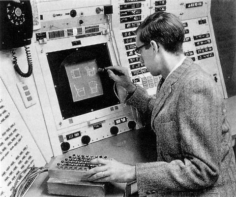
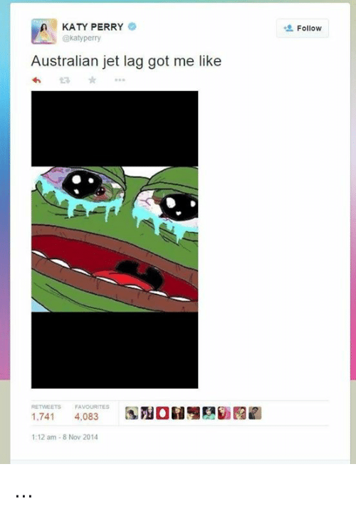

1. Ivan Sutherland using his own developed machine called "Sketchpad". 1962

2. A Brute Chart by /r/FindBostomBombers, a community of amateur criminologists. 2013

3. Still from video created to highlight Hillary Clinton seemingly spitting green substances into her glass. 2016

4. Chart Brute highlighting Hillary Clinton's head, unsure what is trying to be shown. 2016
5. Chart Brute showing wheelchair lift on Hillary Clinton's special van. 2016

6. Speculative Chart Brute assuming Hillary Clinton has a catheter. 2016
7. Chart Brute trying to proof the #pizzagate theory by showing Hillary Clinton might be a cannibal based on the syntoms of the disease "Kuru". 2016

8. Expanding Brain Meme concentrated on typefaces. Know Your Meme. 2017

9. Expanding Brain Meme about the debate on pineapple on pizza. Know Your Meme. 2017

10. Expanding Brain Meme ridiculing the Spain - Catalonia independence issue. Skrillex Is Overated And Stuff: Chapter II (Facebook page). 2017

11. Expanding Brain Meme ridiculing the genderfluid discussion. LiberalTears (Facebook page). 2017

12. "Leftist Memes" ridiculing the meme design approach by the left Reddit/CringeAnarchy. 2017

13. "Trump, The Art Of The Deal". Donald J. Trump and Tony Schwartz. 1987
14. "Es Lebe Deutchland!". 1930

15. GIF of the game Mortal Kombat but edited to represent news broadcast CNN and Donald Trump. Giphy. 2016

16. GIF of Donald Trump showing affection for the American flag. Giphy. 2017

17. "God Emperor Trump", edited Warhammer 40k image. 2017

18. Anti-semetic Polish Poster saying "The Soviet Pyramid". It depicts soviet working class suffering under the weight of the Soviet army, Jewish bankers and Stalin. 1919

19. Manipule displaying Dutch politician Thierry Baudet. Dank Thierry Baudet Memes. 2017
20. Humorous meme about Thierry Baudet his infamous lavender bag. Dank Thierry Baudet Memes. 2017

21. "So Oder So?", Nazi propaganda against the Soviet union. Rudolf Grossmann. 1933

22. "The Fools Of Kaganovich", Book cover. Karl Miedbrodt . 1930
23. "Le Happy Merchant", Jewish caricature mainly used on 4chan. A. Wyatt Man 2012
24. Le Happy Merchant used to ridicule Bernie Sanders. 2016
25. Manipule containing different extremes to display Le Happy Merchant. 2017

26. Manipule showing the amount of Jewish people working for CNN and NBC News. 2010
27. Collection of anti semetic "factual" Manipules. 2017

28. Caricature with the purpose to ridicule black people. Skrillex Is Overated And Stuff: Chapter II (Facebook page). 2017

29. "Degenerate Music", Nazi propaganda depicting a black Jazz artist wearing the Star of David. 1962
1. Ivan Sutherland using his own developed machine called "Sketchpad". 1962

1. Ivan Sutherland using his own developed machine called "Sketchpad". 1962

1. Ivan Sutherland using his own developed machine called "Sketchpad". 1962

1. Ivan Sutherland using his own developed machine called "Sketchpad". 1962

1. Ivan Sutherland using his own developed machine called "Sketchpad". 1962

1. Ivan Sutherland using his own developed machine called "Sketchpad". 1962

1. Ivan Sutherland using his own developed machine called "Sketchpad". 1962
1. Ivan Sutherland using his own developed machine called "Sketchpad". 1962
1. Ivan Sutherland using his own developed machine called "Sketchpad". 1962
1. Ivan Sutherland using his own developed machine called "Sketchpad". 1962

1. Ivan Sutherland using his own developed machine called "Sketchpad". 1962
1. Ivan Sutherland using his own developed machine called "Sketchpad". 1962
1. Ivan Sutherland using his own developed machine called "Sketchpad". 1962
1. Ivan Sutherland using his own developed machine called "Sketchpad". 1962

1. Ivan Sutherland using his own developed machine called "Sketchpad". 1962

1. Ivan Sutherland using his own developed machine called "Sketchpad". 1962
1. Ivan Sutherland using his own developed machine called "Sketchpad". 1962

1. Ivan Sutherland using his own developed machine called "Sketchpad". 1962

1. Ivan Sutherland using his own developed machine called "Sketchpad". 1962

1. Ivan Sutherland using his own developed machine called "Sketchpad". 1962
1. Ivan Sutherland using his own developed machine called "Sketchpad". 1962
1. Ivan Sutherland using his own developed machine called "Sketchpad". 1962
1. Ivan Sutherland using his own developed machine called "Sketchpad". 1962
1. Ivan Sutherland using his own developed machine called "Sketchpad". 1962

1. Ivan Sutherland using his own developed machine called "Sketchpad". 1962

1. Ivan Sutherland using his own developed machine called "Sketchpad". 1962

1. Ivan Sutherland using his own developed machine called "Sketchpad". 1962

1. Ivan Sutherland using his own developed machine called "Sketchpad". 1962
1. Ivan Sutherland using his own developed machine called "Sketchpad". 1962
Subject:
Political memes (Manipule)
Research question:
How can the approach and tactics of mass political and internet culture movements be used to create new politically engaged graphic design principles?
Hypothesis:
Looking at the outcome of Trump’s election, we can definitely see that memes and internet culture have had a high influence on the political views of entire nations. I believe that our current common identity is shaped by these memes. At school, graphic design students are being taught to apply certain communication principles to engage with a certain group of people, and communicate your specific political view towards them. We can now see that these principles don’t withstand against the easy, DIY style, propaganda and meme creation from Conservatives. If I’m able to give us a better understanding on how these memes work, I believe we can definitely use certain aspects from political memes to create more influential, political work.
Starting point:
I can see the believe of many fellow students in creating truly, world changing, work is heavily declining. Great political work is being made but the results are not there.
Research method:
There are many books about the influence of internet culture on society, propoganda, communication with media and memes. Outside of books I also research a lot in internet based news outlets like blogs, Youtube channels that deal with this specific subject. Browsing the sources of where the whole meme culture comes from also has a high importance for me. On top of that, I would like to see what 4chan thinks about my views by starting threads on there and similar forums.